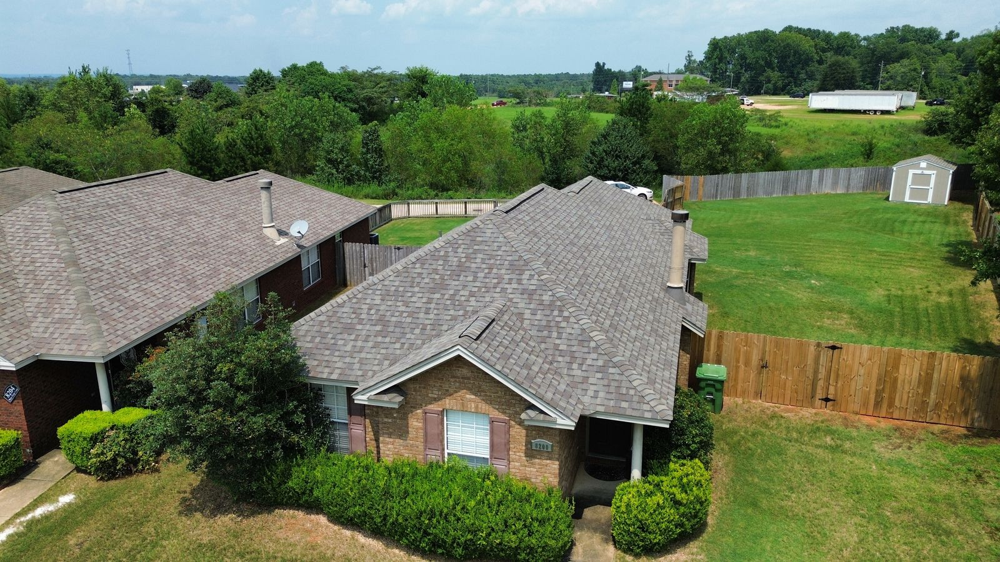

Roof Repair in Alabama, Done Right the First Time
Leaks, missing shingles, storm damage. Precision Roofing Alabama finds the real problem and fixes it right, protecting your home before small issues turn into expensive ones.
Repairs Done Right,
the First Time
Not every roofing problem calls for a full replacement. A fast, expert repair can stop a leak, restore protection, and add years to the life of your existing roof, for a fraction of the cost.
Our crews track down the real source of the problem, not just the symptom, and fix it to manufacturer spec. We take care of homeowners across Montgomery, Birmingham, Huntsville, Auburn-Opelika, and Baldwin County, and we're licensed, insured, and 5.0-star rated by folks right here in Alabama.
We document everything with clear photos, explain exactly what we found in plain English, and leave your roof watertight and your property spotless.

The Repairs Alabama Roofs Need Most
Roof leaks. Water stains on a ceiling rarely sit right under the hole. We trace the water back to where it actually got in, whether that's a cracked pipe boot, failed sealant, or a lifted shingle, and we fix the source, not the symptom.
Missing or damaged shingles. Alabama wind and summer storms lift, crease, and tear shingles. We match your existing shingle as closely as we can and secure the courses around it so the same spot doesn't give you trouble again.
Flashing, valleys, and chimneys. Most "mystery leaks" start where the roof meets something else: chimneys, walls, skylights, and valleys. We reset or replace flashing the way the manufacturer intended, instead of smearing on caulk that gives out in a season.
Storm and hail damage. After a storm rolls through, damage can be spread out and hard to spot from the ground. If it's isolated, we repair it and you're done. If it's widespread, you may have an insurance claim on your hands. Take a look at our storm & hail damage page, and rest easy knowing we handle the claim process for you.
Our Repair Process
Free Inspection
We look over the whole roof, not just the problem spot, and photograph everything we find.
Honest Recommendation
If a repair solves it, that's what we quote. You get a clear written estimate before any work starts.
Repair to Spec
Materials matched to your roof, installed to manufacturer spec by our own experienced crew.
Proof & Cleanup
Before-and-after photos of the completed repair, and a spotless yard when we leave.
What Does Roof Repair Cost in Alabama?
Repair pricing comes down to a few things: the size of the damaged area, the pitch and height of your roof, the materials needed to match what's there, and whether the decking underneath took on water. A simple shingle repair costs a small fraction of a replacement. Repairs that get into decking or a lot of flashing work cost more, and we'll tell you why before we touch a thing.
Here's our promise to you: the inspection is free, the estimate is written and transparent, and we won't talk you into a replacement you don't need. If your roof is getting close to the end of its life, we'll sit down and show you honest numbers for both options, financing included, and let you make the call. That's how we'd want to be treated, so that's how we do business.
Roof Repair Questions, Answered
How much does roof repair cost in Alabama?
Most common repairs, like replacing missing shingles, resealing flashing, or patching a small leak, cost far less than a replacement. The price depends on the size of the damaged area, the pitch and height of your roof, and whether the decking needs work. Every job starts with a free inspection and a written estimate, so you know the exact price before we ever start.
How fast can you get to a leaking roof?
Active leaks go to the front of the line. In most of our Alabama service area we can come take a look within a day or two, and we'll walk you through protecting the inside of your home in the meantime.
Will you try to sell me a whole new roof?
No. If a repair will truly solve the problem, that's exactly what we recommend. It costs a fraction of a replacement and adds years to the roof you already have. We only bring up replacement when a repair no longer makes financial sense, and we show you the photos so you can see it for yourself.
Is storm or hail damage a repair or an insurance claim?
It depends on how far the damage goes. A few wind-lifted shingles are usually a simple repair. Widespread hail bruising usually means you have an insurance claim, and we handle that whole process for you, from the photos to working with your adjuster.
Got a Leak or Storm Damage?
Schedule your free roof inspection today. No obligation, no pressure, just an honest assessment and a transparent estimate from a team you can trust.
Schedule Free Inspection